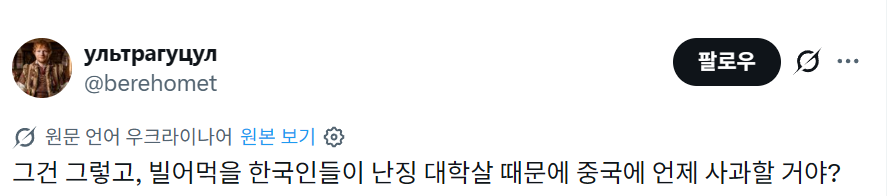
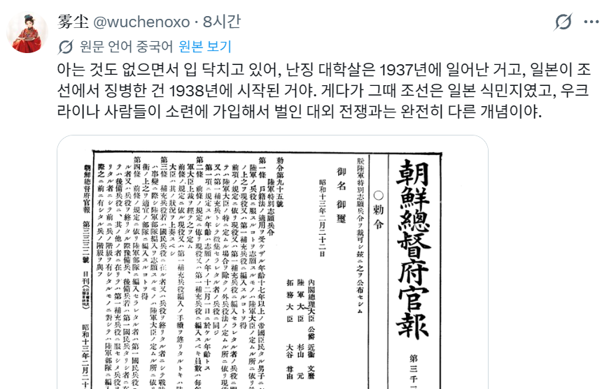
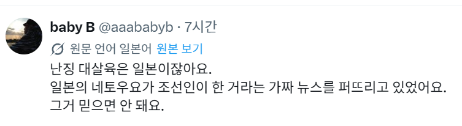
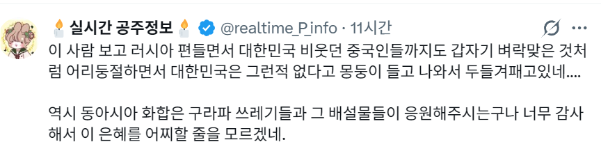
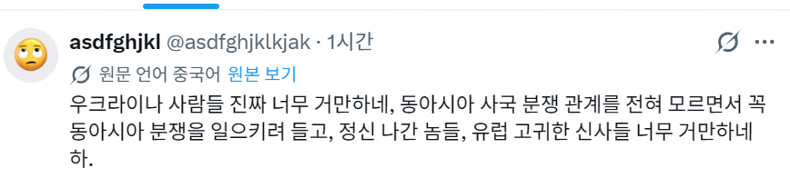
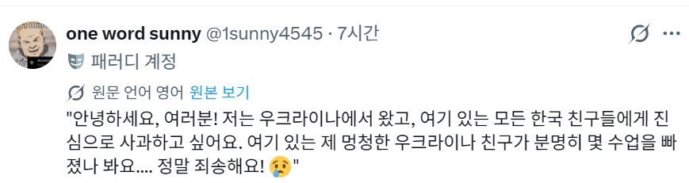

사전지식)
최근 젤렌스키가 한국이 왜 우크라이나를 더 지원하지 않느냐고 발언한 것으로부터
이만하면 됐지 존나 징징대네(한국) VS 아 지원좀 더 해달라고 (우크라)
뉘앙스의 온라인 키배가 존나게 활성화되는중

그러던 와중 어떤 개병신 우크라이나인이 이딴 트윗을 올림
난징대학살을 누가 일으켰는지도 모르는 상황




이로 인하여 한중일 대통합이 일어나 기합찬 사이버 응징을 가하는 중 ㄷㄷ

보다못한 우크라이나인도 거드는 모습
오늘도 트위터는 어지럽다
꿋꿋하게 글삭은 안하는 원트가 레전드
저 트윗만 놓고보면 비유법이라 뭐 아주 틀린 말은 아닌데, 애초에 한국 정부 입장문을 트윗에서 보고 왜 한국은 우크라이나를 돕지 않느냐고 쌍욕박은게 먼저라 한국쪽 트윗이 날선 반응이 많던거였더라
진짜 쟤네 외교 방식을 이해하질 못하겠어. 정부도 그렇고 개인도 그렇고 타 국가를 까대면서 도움을 요청하는건 참 신박한 방식인데